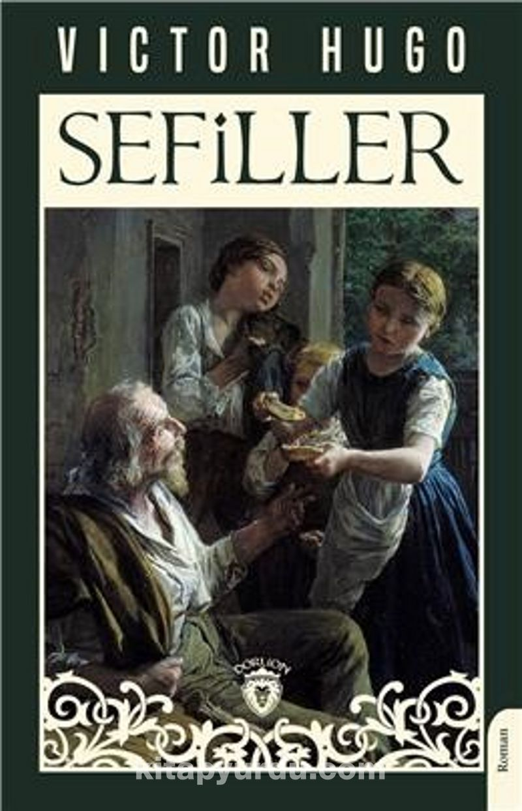

Yerli Eserler
Kürk Mantolu Madonna
Raif Efendi'nin günlüğü aracılığıyla, gençliğinde tanıştığı Maria Puder adlı bir kadına olan aşkını ve bu aşkın onun hayatını nasıl şekillendirdiğini anlatır.
İnce Memed
Toroslar'da bir köyde yaşayan İnce Memed'in, köylülere zulmeden ağalara karşı mücadelesini anlatan destansı bir romandır.
Saatleri Ayarlama Enstitüsü
Modernleşme sürecindeki Türkiye'nin toplumsal çelişkilerini mizahi bir dille ele alan bu roman, bir saat tamircisinin kurduğu enstitü etrafında gelişen olayları anlatır.
Tutunamayanlar
Modern Türk edebiyatının en önemli eserlerinden biri olan bu roman, topluma uyum sağlayamayan bireylerin trajikomik hikayesini anlatır.
Aylak Adam
Toplumun dayattığı yaşam biçimlerine uyum sağlayamayan bir adamın modern hayat içindeki yalnızlığını ve arayışlarını anlatan bir başyapıt.
Huzur
Cumhuriyet dönemi İstanbul'unun atmosferinde, aşk ve varoluş sorgulamaları etrafında şekillenen derinlikli bir roman.
Kuyucaklı Yusuf
Yusuf'un trajik yaşam öyküsü üzerinden Anadolu'nun toplumsal yapısını ve bireyin çaresizliğini anlatan unutulmaz bir roman.
Anayurt Oteli
Bir kasaba otelinde katiplik yapan Zebercet'in yalnızlığını ve iç dünyasının karmaşasını anlatan psikolojik bir roman.
Serenad
İkinci Dünya Savaşı yıllarında Nazi zulmünden kaçan bir Yahudi ailenin ve onları kurtarmaya çalışan Türk diplomatın hikayesi.
Kardeşimin Hikayesi
Bir ailenin iki farklı kuşağının hikayesi üzerinden Türkiye'nin toplumsal dönüşümünü anlatan sarsıcı bir roman.
Yabancı Eserler

Küçük Prens
Sahra Çölü'ne düşen bir pilotun Küçük Prens'le karşılaşması ile başlayan hikaye, evrensel değerler üzerine derin mesajlar içerir.

Şeker Portakalı
Zezé'nin hayal gücü, yoksullukla dolu hayatına renk katarken, okuyucuya da umut ve sevgi dolu bir dünyanın kapılarını aralar.

Simyacı
Santiago adındaki bir çobanın kişisel efsanesini keşfetme hikayesini anlatır. Hayallerinin peşinden gitme cesareti ve evrenin insana yardım etme yolları hakkında ilham verir.
Fahrenheit 451
Kitapların yasaklandığı ve itfaiyecilerin yangın söndürmek yerine kitap yakmakla görevlendirildiği bir toplumu konu alır.
Hayvan Çiftliği
Bir grup çiftlik hayvanının, insanların yönetimini devirip eşitlikçi bir toplum kurma çabalarını alegorik bir dille anlatır.

Martı
Jonathan Livingston adındaki bir martının, sıradan martı yaşamını reddedip uçmanın mükemmelliğini arayışını anlatır.

1984
Totaliter bir rejim altında yaşayan Winston Smith'in hikayesini anlatır. "Büyük Birader" kavramıyla tanınan bu eser, gözetim toplumu ve düşünce kontrolü üzerine derin bir eleştiri sunar.

Sefiller
Jean Valjean'ın hayatı üzerinden 19. yüzyıl Fransa'sının toplumsal yapısını ele alan bu devasa eser, adalet, merhamet ve insan ruhunun dönüşümü üzerine derin sorgulamalar içerir.
Suç ve Ceza
Raskolnikov adlı gencin işlediği cinayet ve sonrasında yaşadığı psikolojik çöküşü anlatan bu roman, insan ruhunun derinliklerine inen bir başyapıttır.

Bülbülü Öldürmek
1930'ların Alabama'sında geçen bu roman, ırkçılık ve adaletsizlik temalarını çocuk gözünden anlatır. Avukat Atticus Finch'in dürüstlük ve adalet arayışı unutulmazdır.